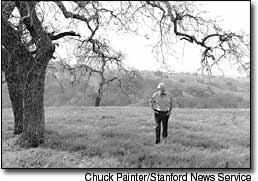

Sept. 3 marks the 40th anniversary of the signing of the Wilderness Act, the landmark federal legislation that preserves more than 105 million acres of wild land throughout the United States. Within designated wild areas, the Act allows research and recreation, such as hiking, canoeing and camping, but prohibits mechanized vehicles and all development - including road building, logging and drilling. Wilderness, as defined by the Act, retains its primeval character - land where “the Earth and its community of life are untrammeled by man, where man himself is a visitor who does not remain.”
Proposals are pending to protect millions more wild acres - the Act declared it to be “the policy of the Congress to secure for the American people of present and future generations the benefits of an enduring resource of wilderness.” Today only 4.67 percent of U.S. land (2.5 percent outside of Alaska) has permanent wilderness designation.
On Dec. 3, 1960, four years before the Wilderness Act was adopted, the following letter was written by esteemed author and conservationist Wallace Stegner (1909-1993) to David Pesonen, a consultant to a commission reviewing the need for wilderness legislation. It received global acclaim and became the manifesto for the wilderness movement. “Even just the last four words, ‘the geography of hope,’ had enough magic to help sway a nation toward a course that would have been unimaginable 50 years ago,” wrote Stegner’s biographer, Jackson J. Benson.
To locate wilderness areas near you, visit www.wilderness.net. To learn how you can help preserve our remaining wild places, see "Help Preserve Wilderness," below. - Mother
Dear Mr. Pesonen:
I believe that you are working on the wilderness portion of the Outdoor Recreation Resources Review Commission’s report. If I may, I should like to urge some arguments for wilderness preservation that involve recreation, as it is ordinarily conceived, hardly at all. Hunting, fishing, hiking, mountain-climbing, camping, photography, and the enjoyment of natural scenery will all, surely, figure in your report. So will the wilderness as a genetic reserve, a scientific yardstick by which we may measure the world in its natural balance against the world in its man-made imbalance. What I want to speak for is not so much the wilderness uses, valuable as those are, but the wilderness idea, which is a resource in itself. Being an intangible and spiritual resource, it will seem mystical to the practical-minded - but then anything that cannot be moved by a bulldozer is likely to seem mystical to them.
I want to speak for the wilderness idea as something that has helped form our character and that has certainly shaped our history as a people. It has no more to do with recreation than churches have to do with recreation, or than the strenuousness and optimism and expansiveness of what historians call the “American Dream” have to do with recreation. Nevertheless, since it is only in this recreation survey that the values of wilderness are being compiled, I hope you will permit me to insert this idea between the leaves, as it were, of the recreation report.
Something will have gone out of us as a people if we ever let the remaining wilderness be destroyed; if we permit the last virgin forests to be turned into comic books and plastic cigarette cases; if we drive the few remaining members of the wild species into zoos or to extinction; if we pollute the last clear air and dirty the last clean streams and push our paved roads through the last of the silence, so that never again will Americans be free in their own country from the noise, the exhausts, the stinks of human and automotive waste. And so that never again can we have the chance to see ourselves single, separate, vertical and individual in the world, part of the environment of trees and rocks and soil, brother to the other animals, part of the natural world and competent to belong in it. Without any remaining wilderness we are committed wholly, without chance for even momentary reflection and rest, to a headlong drive into our technological termite-life, the Brave New World of a completely man-controlled environment. We need wilderness preserved - as much of it as is still left, and as many kinds - because it was the challenge against which our character as a people was formed. The reminder and the reassurance that it is still there is good for our spiritual health even if we never once in 10 years set foot in it. It is good for us when we are young, because of the incomparable sanity it can bring briefly, as vacation and rest, into our insane lives. It is important to us when we are old simply because it is there - important, that is, simply as idea.
We are a wild species, as Darwin pointed out. Nobody ever tamed or domesticated or scientifically bred us. But for at least three millennia we have been engaged in a cumulative and ambitious race to modify and gain control of our environment, and in the process we have come close to domesticating ourselves. Not many people are likely, any more, to look upon what we call “progress” as an unmixed blessing. Just as surely as it has brought us increased comfort and more material goods, it has brought us spiritual losses, and it threatens now to become the Frankenstein that will destroy us. One means of sanity is to retain a hold on the natural world, to remain, insofar as we can, good animals. Americans still have that chance, more than many peoples; for while we were demonstrating ourselves the most efficient and ruthless environment-busters in history, and slashing and burning and cutting our way through a wilderness continent, the wilderness was working on us. It remains in us as surely as Indian names remain on the land. If the abstract dream of human liberty and human dignity became, in America, something more than an abstract dream, mark it down at least partially to the fact that we were in subtle ways subdued by what we conquered.
The Connecticut Yankee, sending likely candidates from King Arthur’s unjust kingdom to his Man Factory for rehabilitation, was over-optimistic, as he later admitted. These things cannot be forced, they have to grow. To make such a man, such a democrat, such a believer in human individual dignity, as Mark Twain himself, the frontier was necessary, Hannibal and the Mississippi and Virginia City, and reaching out from those the wilderness; the wilderness as opportunity and as idea, the thing that has helped to make an American different from and, until we forget it in the roar of our industrial cities, more fortunate than other men. For an American, insofar as he is new and different at all, is a civilized man who has renewed himself in the wild. The American experience has been the confrontation by old peoples and cultures of a world as new as if it had just risen from the sea. That gave us our hope and our excitement, and the hope and excitement can be passed on to newer Americans, Americans who never saw any phase of the frontier. But only so long as we keep the remainder of our wild as a reserve and a promise - a sort of wilderness bank.
As a novelist, I may perhaps be forgiven for taking literature as a reflection, indirect but profoundly true, of our national consciousness. And our literature, as perhaps you are aware, is sick, embittered, losing its mind, losing its faith. Our novelists are the declared enemies of their society. There has hardly been a serious or important novel in this century that did not repudiate in part or in whole American technological culture for its commercialism, its vulgarity, and the way in which it has dirtied a clean continent and a clean dream.
I do not expect that the preservation of our remaining wilderness is going to cure this condition. But the mere example that we can as a nation apply some other criteria than commercial and exploitative considerations would be heartening to many Americans, novelists or otherwise. We need to demonstrate our acceptance of the natural world, including ourselves; we need the spiritual refreshment that being natural can produce. And one of the best places for us to get that is in the wilderness where the fun houses, the bulldozers and the pavements of our civilization are shut out.
Sherwood Anderson, in a letter to Waldo Frank in the 1920s, said it better than I can. “Is it not likely that when the country was new and men were often alone in the fields and the forest they got a sense of bigness outside themselves that has now in some way been lost … Mystery whispered in the grass, played in the branches of trees overhead, was caught up and blown across the American line in clouds of dust at evening on the prairies … I am old enough to remember tales that strengthen my belief in a deep semi-religious influence that was formerly at work among our people. The flavor of it hangs over the best work of Mark Twain … I can remember old fellows in my home town speaking feelingly of an evening spent on the big empty plains. It had taken the shrillness out of them. They had learned the trick of quiet.”
We could learn it too, even yet; even our children and grandchildren could learn it. But only if we save, for just such absolutely non-recreational, impractical and mystical uses as this, all the wild that still remains to us.
It seems to me significant that the distinct downturn in our literature from hope to bitterness took place almost at the precise time when the frontier officially came to an end in 1890, and when the American way of life had begun to turn strongly urban and industrial. The more urban it has become, and the more frantic with technological change, the sicker and more embittered our literature, and I believe our people, have become. For myself, I grew up on the empty plains of Saskatchewan and Montana and in the mountains of Utah, and I put a very high valuation on what those places gave me.
And if I had not been able periodically to renew myself in the mountains and deserts of western America I would be very nearly bughouse. Even when I can’t get to the back country, the thought of the colored deserts of southern Utah, or the reassurance that there are still stretches of prairie where the world can be instantaneously perceived as disk and bowl, and where the little but intensely important human being is exposed to the five directions and the thirty-six winds, is a positive consolation. The idea alone can sustain me. But as the wilderness areas are progressively exploited or “improved,” as the jeeps and bulldozers of uranium prospectors scar up the deserts and the roads are cut into the alpine timberlands, and as the remnants of the unspoiled and natural world are progressively eroded, every such loss is a little death in me. In us.
I am not moved by the argument that those wilderness areas which have already been exposed to grazing or mining are already deflowered, and so might as well be “harvested.” For mining I cannot say much good except that its operations are generally short-lived. The extractable wealth is taken and the shafts, the tailings and the ruins left, and in a dry country such as the American West the wounds men make in the earth do not quickly heal. Still, they are only wounds; they aren’t absolutely mortal. Better a wounded wilderness than none at all. And as for grazing, if it is strictly controlled so that it does not destroy the ground cover, damage the ecology or compete with the wildlife, it is in itself nothing that need conflict with the wilderness feeling or the validity of the wilderness experience. I have known enough range cattle to recognize them as wild animals; and the people who herd them have, in the wilderness context, the dignity of rareness; they belong on the frontier, moreover, and have a look of rightness. The invasion they make on the virgin country is a sort of invasion that is as old as Neolithic man, and they can, in moderation, even emphasize a man’s feeling of belonging to the natural world. Under surveillance, they can belong; under control, they need not deface or mar. I do not believe that in wilderness areas where grazing has never been permitted, it should be permitted; but I do not believe either that an otherwise untouched wilderness should be eliminated from the preservation plan because of limited existing uses such as grazing which are in consonance with the frontier condition and image.
Let me say something on the subject of the kinds of wilderness worth preserving. Most of those areas contemplated are in the national forests and in high mountain country. For all the usual recreational purposes, the alpine and forest wildernesses are obviously the most important, both as genetic banks and as beauty spots. But for the spiritual renewal, the recognition of identity, the birth of awe, other kinds will serve every bit as well. Perhaps, because they are less friendly to life, more abstractly nonhuman, they will serve even better. On our Saskatchewan prairie, the nearest neighbor was four miles away, and at night we saw only two lights on all the dark rounding earth. The earth was full of animals - field mice, ground squirrels, weasels, ferrets, badgers, coyotes, burrowing owls, snakes. I knew them as my little brothers, as fellow creatures, and I have never been able to look upon animals in any other way since. The sky in that country came clear down to the ground on every side, and it was full of great weathers, and clouds, and winds, and hawks. I hope I learned something from knowing intimately the creatures of the earth; I hope I learned something from looking a long way, from looking up, from being much alone. A prairie like that, one big enough to carry the eye clear to the sinking, rounding horizon, can be as lonely and grand and simple in its forms as the sea. It is as good a place as any for the wilderness experience to happen; the vanishing prairie is as worth preserving for the wilderness idea as the alpine forests.
So are great reaches of our western deserts, scarred somewhat by prospectors but otherwise open, beautiful, waiting, close to whatever God you want to see in them. Just as a sample, let me suggest the Robbers’ Roost country in Wayne County, Utah, near the Capitol Reef National Monument. In that desert climate the dozer and jeep tracks will not soon melt back into the earth, but the country has a way of making the scars insignificant. It is a lovely and terrible wilderness, such a wilderness as Christ and the prophets went out into; harshly and beautifully colored, broken and worn until its bones are exposed, its great sky without a smudge or taint from Technocracy, and in hidden corners and pockets under its cliffs the sudden poetry of springs. Save a piece of country like that intact, and it does not matter in the slightest that only a few people every year will go into it. That is precisely its value. Roads would be a desecration, crowds would ruin it. But those who haven’t the strength or youth to go into it and live can simply sit and look. They can look 200 miles, clear into Colorado; and looking down over the cliffs and canyons of the San Rafael Swell and the Robbers’ Roost they can also look as deeply into themselves as anywhere I know. And if they can’t even get to the places on the Aquarius Plateau where the present roads will carry them, they can simply contemplate the idea, take pleasure in the fact that such a timeless and uncontrolled part of earth is still there.
These are some of the things wilderness can do for us. That is the reason we need to put into effect, for its preservation, some other principle than the principles of exploitation or “usefulness” or even recreation. We simply need that wild country available to us, even if we never do more than drive to its edge and look in. For it can be a means of reassuring ourselves of our sanity as creatures, a part of the geography of hope.
Very sincerely yours,
Wallace Stegner
From The Sound of Mountain Water by Wallace Stegner. © 1969 by Wallace Stegner. Used by permission of Doubleday, a division of Random House, Inc.
The Wilderness Act charged Congress with the responsibility to protect our wilderness resources for present and future generations. But our remaining wild places face increasing threats from varied development pressures - seven out of every eight acres of U.S. wild land today are at risk of irreversible damage, according to the Campaign for America’s Wilderness. To locate protected areas near you and learn how you can help preserve remaining wilderness, contact:
Campaign for America’s Wilderness
(202) 544-3691
www.leaveitwild.org
The Wilderness Society
(800) 843-9453
www.tws.org
Wilderness Watch
(406) 542-2048
www.wildernesswatch.org
|
 CHUCK PAINTER/STANFORD NEWS SERVICE During a nearly 60-year career, Pulitzer-Prize winner Wallace Stegner, known as the Dean of Western Writers, wrote eloquently about the value of wild places. |
|
|